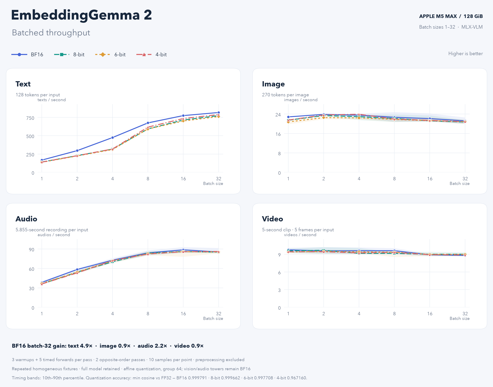

EmbeddingGemma 2 on MLX-VLM
Multimodal embeddings on Apple silicon
Meet Google DeepMind’s EmbeddingGemma 2: text, images, audio, and video in one embedding space, with day-zero support on Apple silicon through MLX-VLM.
Read the article
/ THE NATIV BLOG
Engineering notes, model deep dives, and experiments in running AI on your own hardware.
Multimodal embeddings on Apple silicon
Meet Google DeepMind’s EmbeddingGemma 2: text, images, audio, and video in one embedding space, with day-zero support on Apple silicon through MLX-VLM.
Read the article
Day-0 support, powered by mlx-vlm
A 320B sparse-MoE vision-language model with a hybrid linear/sparse-attention backbone and a 1M-token context, running on your Mac out of the box.
Read the article